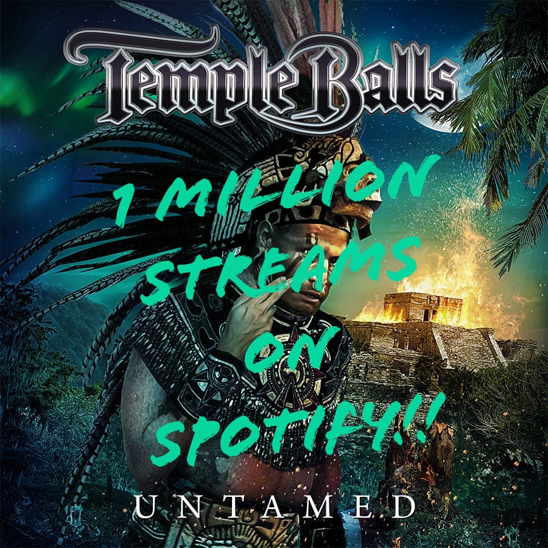

About me:
Hi, I’m Niko, a music producer and guitarist with a deep passion for creating music that moves people. My journey began at the age of ten when I picked up a guitar for the first time, and from that moment, music became my life’s path. I started my own band early on, which opened doors to collaborations with a range of amazing artists like TCT, Dilemma, Erik Grönwall, New Horizon, and many others.
A few years ago, I expanded my passion into music production, working with a variety of artists across genres from heavier rock to mellow pop music. Throughout the years I’ve produced numerous tracks and built a catalog of hundreds of songs that reflect my musical experience.
In addition to production, I’ve been touring the world as the guitarist for the rock band Temple Balls since 2017, delivering high-energy performances to fans globally. One of the greatest milestones was to hit 1 million streams on Spotify with my song back in 2021.

Whether it’s on stage or in the studio, my goal has always been the same: to craft and present authentic, powerful music that resonates with people.